Guide Utilisateur Exhaustif
Manuel complet d'utilisation de la Plateforme de Gestion des Heures Pédagogiques - Université Virtuelle de Côte d'Ivoire
1. Introduction
Bienvenue sur le guide d'utilisation exhaustif de la plateforme GestionHeures UVCI. Ce système automatise et sécurise le suivi des activités pédagogiques des enseignants de l'Université Virtuelle de Côte d'Ivoire.
Le système propose trois espaces dédiés :
- Administrateur : Gestion stratégique et configuration.
- Secrétaire : Gestion opérationnelle et validation.
- Enseignant : Suivi personnel et téléchargements.
2. Authentification et Accès
L'accès sécurisé se fait via l'adresse email institutionnelle.

3. Fonctionnalités de l'Administrateur
3.1. Le Tableau de bord global
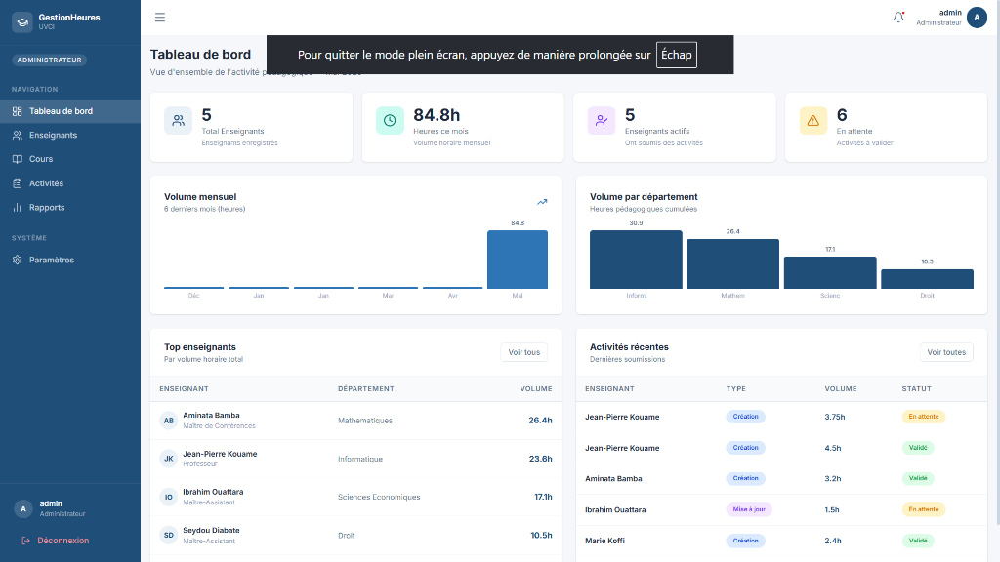
3.2. Catalogue des Cours

3.3. Saisie des Activités Pédagogiques
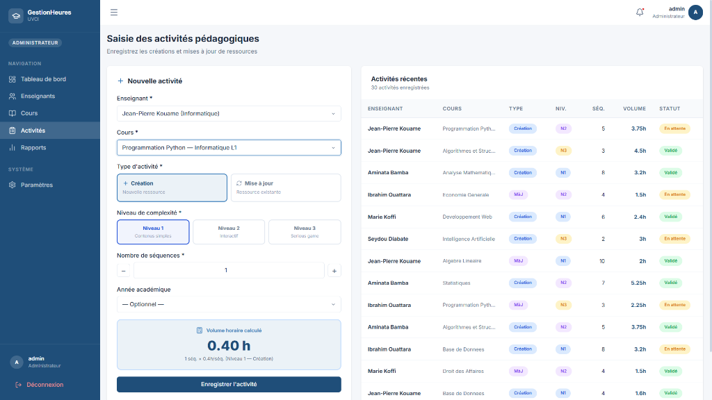
4. Fonctionnalités du Secrétariat
4.1. Tableau de bord & Validation
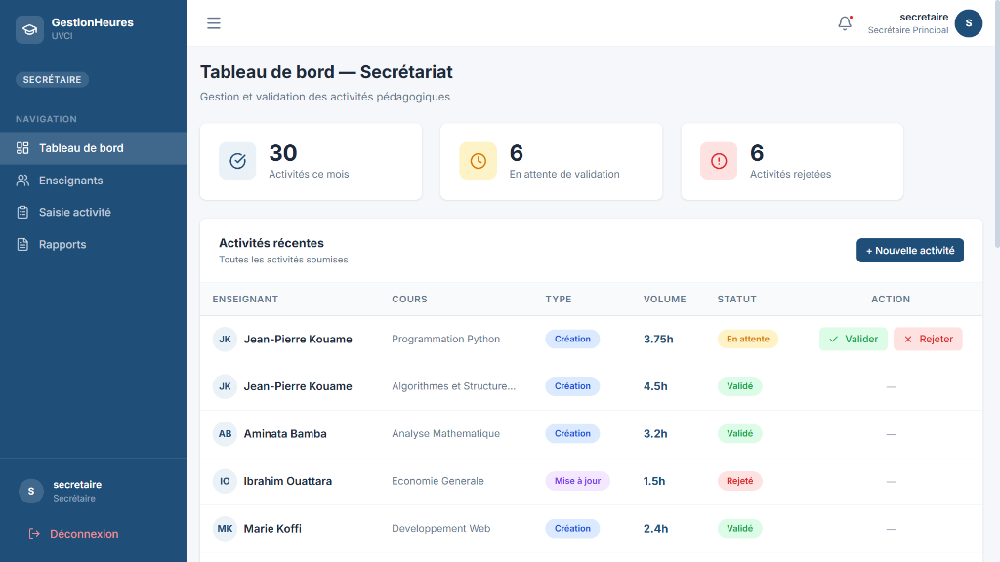
4.2. Liste des Enseignants
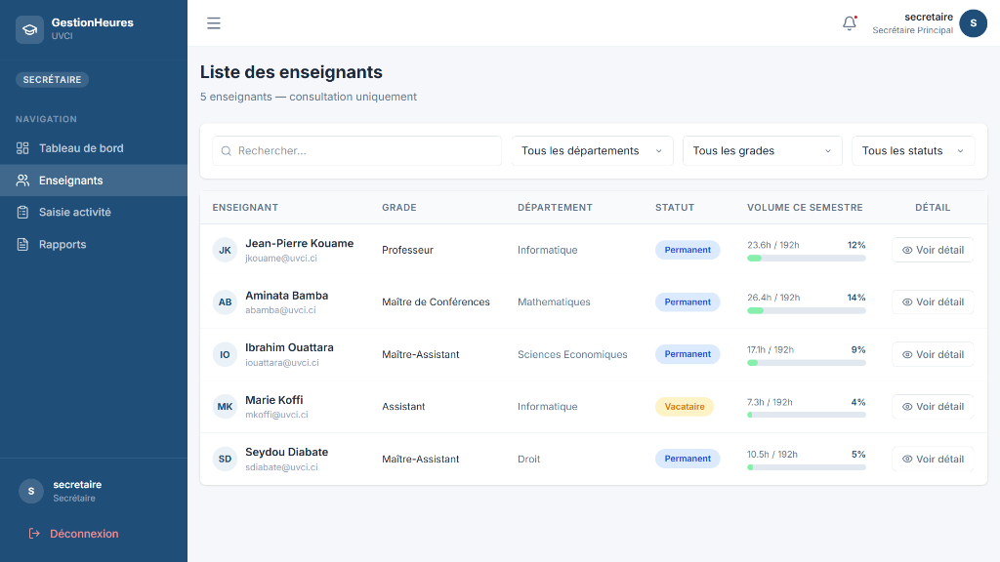
4.3. Saisie d'Activité
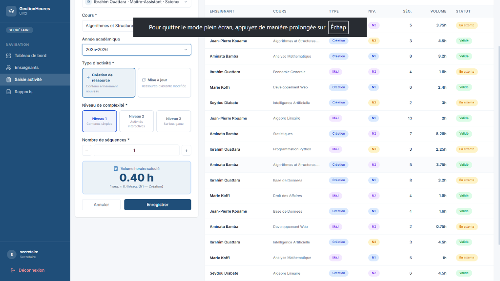
4.4. Rapports & Exportation de l'État Global (Excel)
Le secrétariat peut consulter les rapports d'heures et extraire un état complet et formaté de toutes les heures de l'établissement.
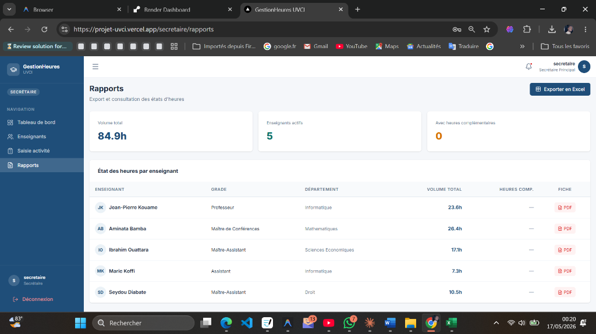
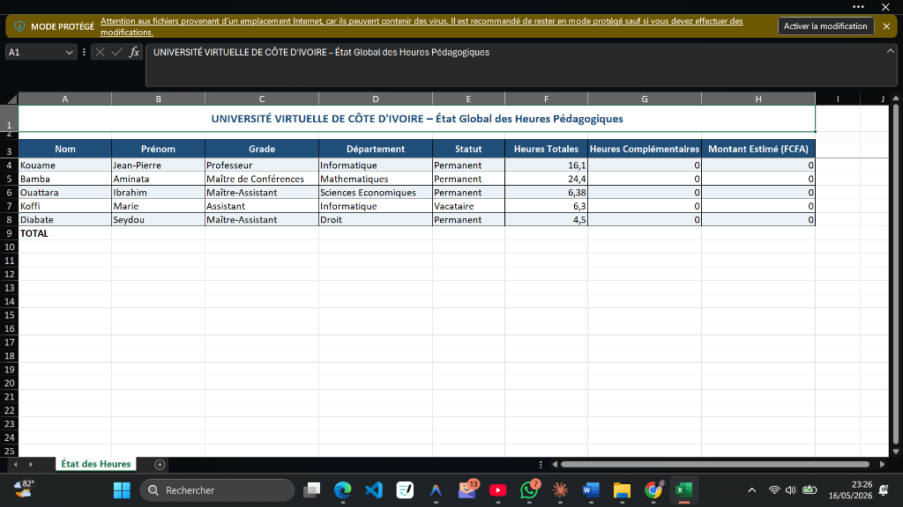
5. Fonctionnalités de l'Enseignant
5.1. Mon Tableau de bord
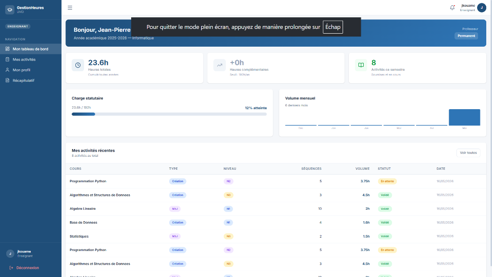
5.2. Mes Activités
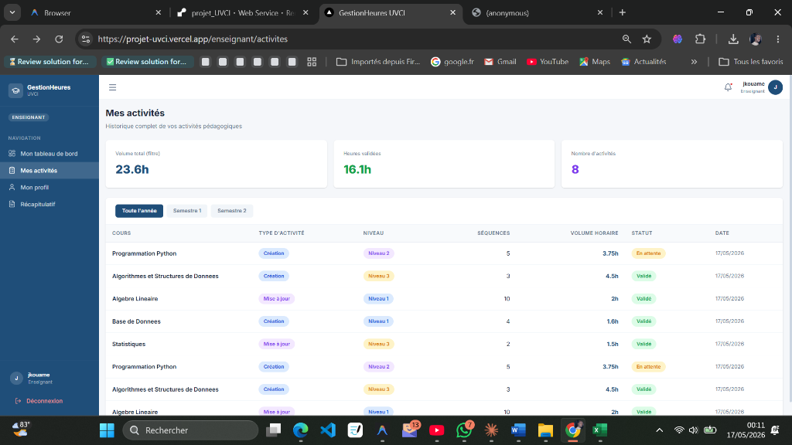
5.3. Mon Récapitulatif PDF Officiel
L'enseignant peut télécharger sa fiche individuelle de récapitulation, prête pour l'archivage ou l'impression.
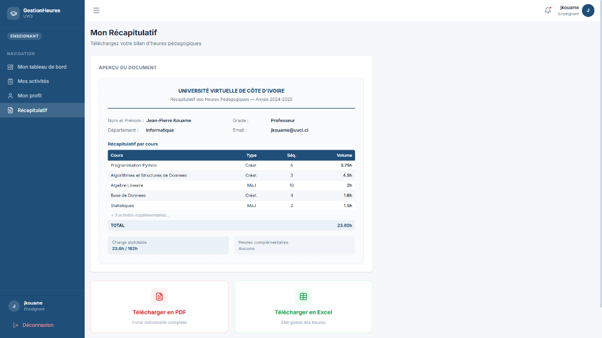
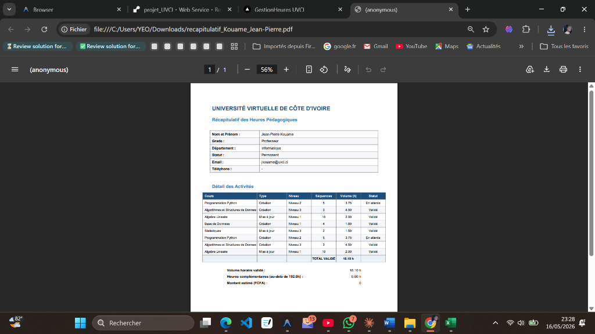
6. Règles de Calcul
Calculs basés sur la matrice de complexité de l'UVCI pour assurer une précision totale.